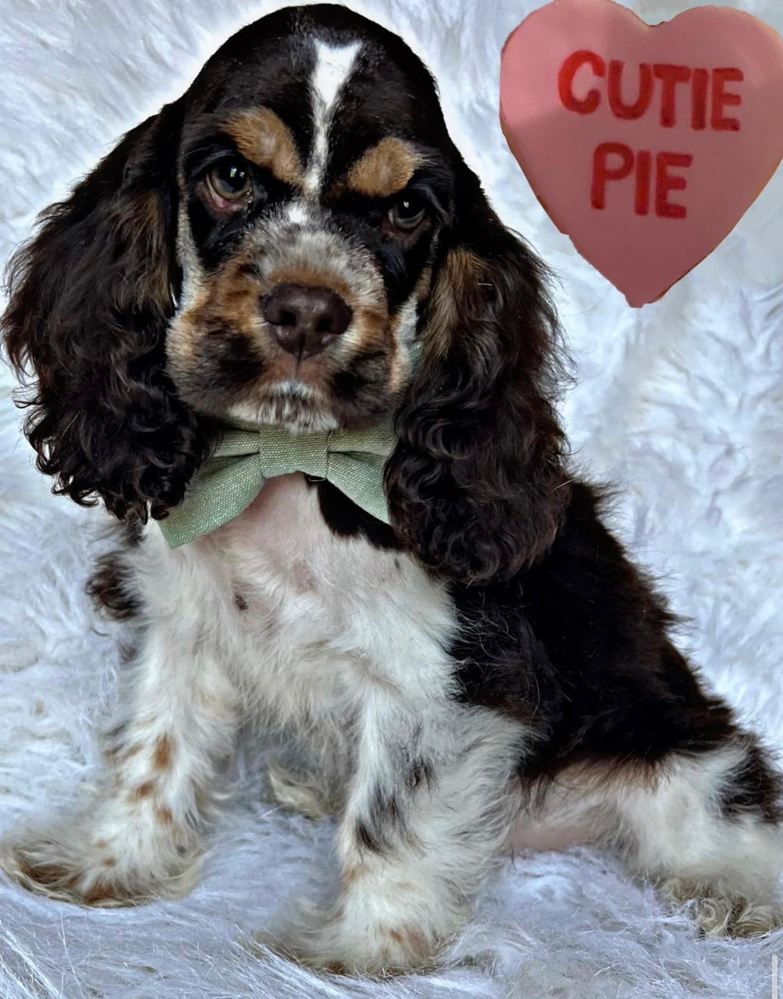
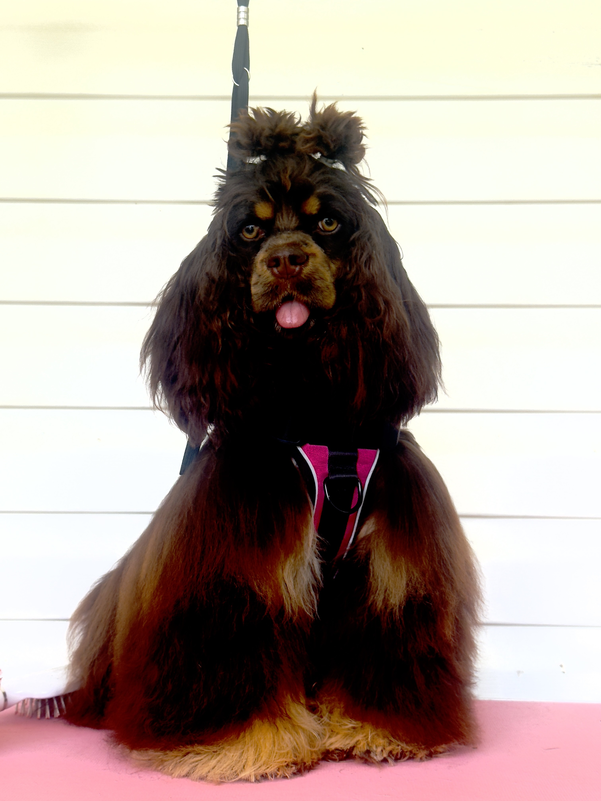
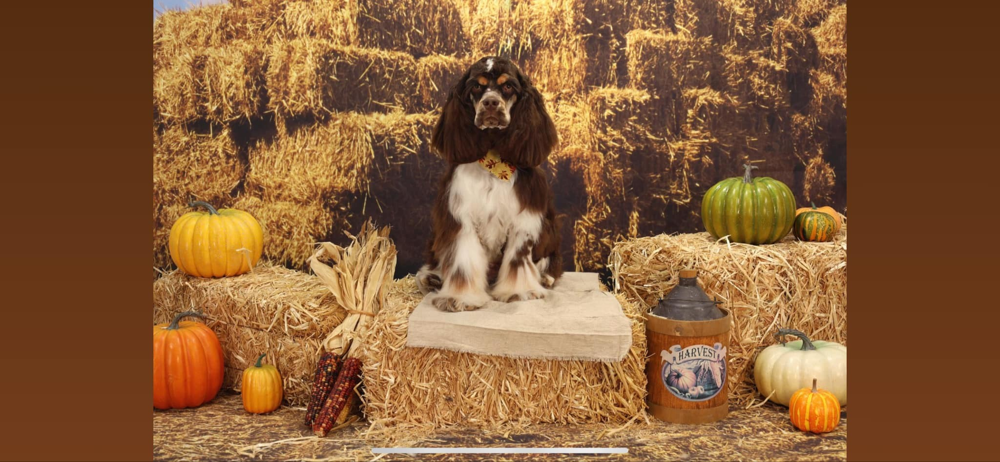
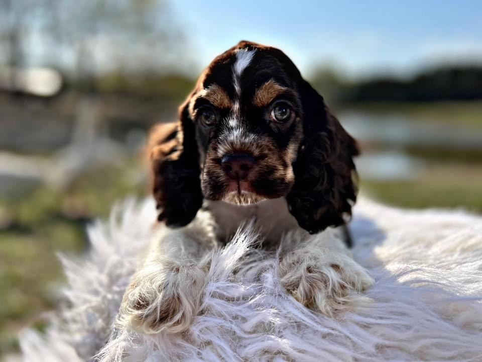
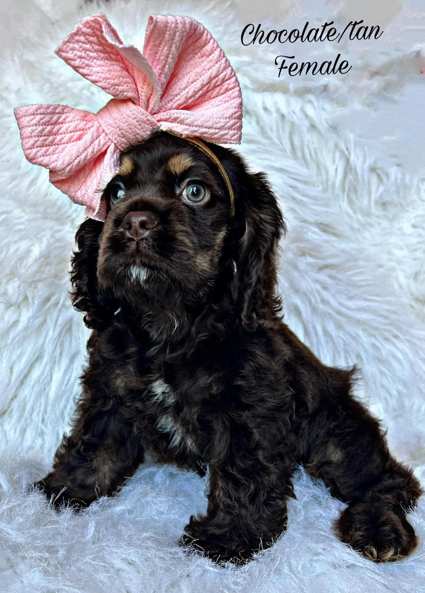
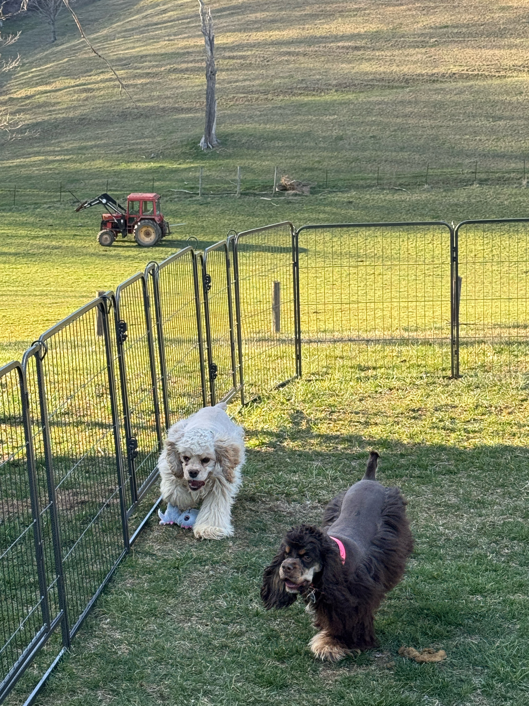
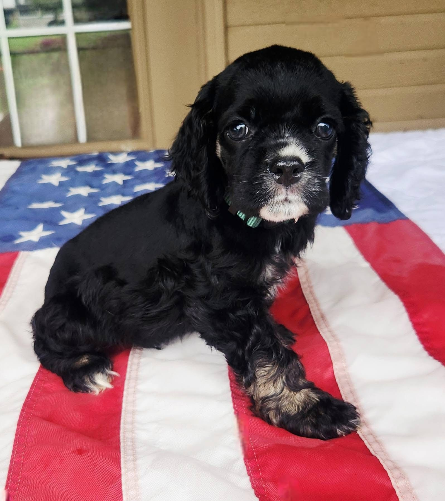
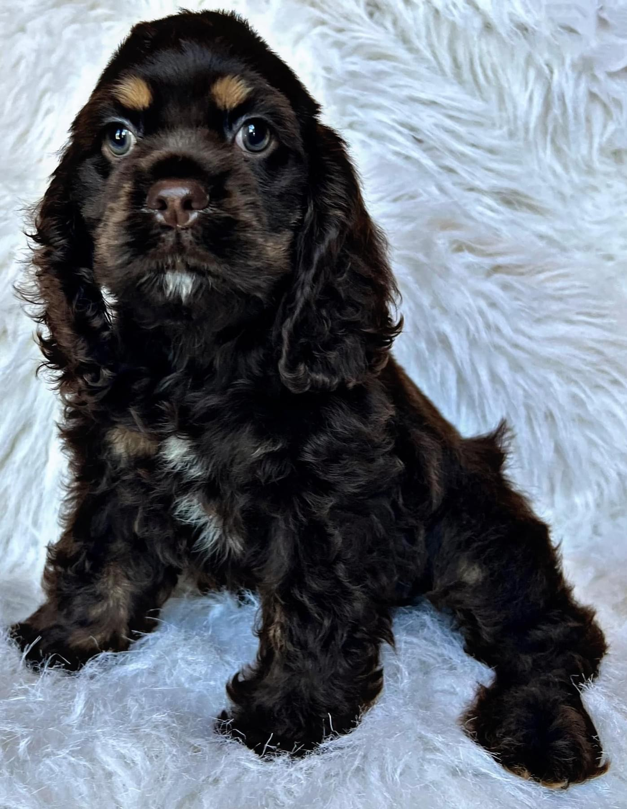

Available Puppies
Update HereFeature currently available puppies or direct visitors to join the waitlist.
Welcome to Southern Diva Spaniels — a warm, family-centered home for American Cocker Spaniels. Explore the dogs, view puppy photos, and connect with the breeder.

This layout now uses the breeder's actual dog and puppy photos, which makes the website feel far more personal and trustworthy.
Southern Diva Spaniels is presented as a family breeder of AKC & UKC American Cocker Spaniels, with a warm country setting and a clear love for the breed.
The design uses soft Southern-inspired tones, elegant typography, and the breeder's real photos to create a premium first impression that feels both welcoming and trustworthy.

These cards can be updated with names, sexes, colors, reservation status, and go-home timing.

Feature currently available puppies or direct visitors to join the waitlist.

Highlight planned pairings, expected due dates, and when applications open.

Build trust with a beautiful gallery showing past litters and happy homes.

Using the breeder's real photos makes the site feel much more authentic, warm, and trustworthy than stock images ever could.

These photos make the site feel more premium, more real, and much more memorable.

This is a clean structure for how Southern Diva Spaniels could explain their inquiry and placement process.
Families make first contact through Facebook or the website inquiry form.
The breeder shares upcoming litters, expectations, and any next steps.
Approved families reserve a puppy and receive progress updates as the litter grows.
The website can later include go-home guidance, puppy packs, and transition tips.
The Facebook page is currently the best public contact point for Southern Diva Spaniels. You can use the button below to message them directly.